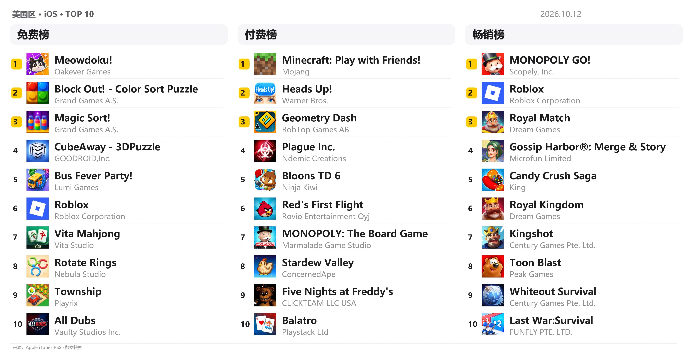
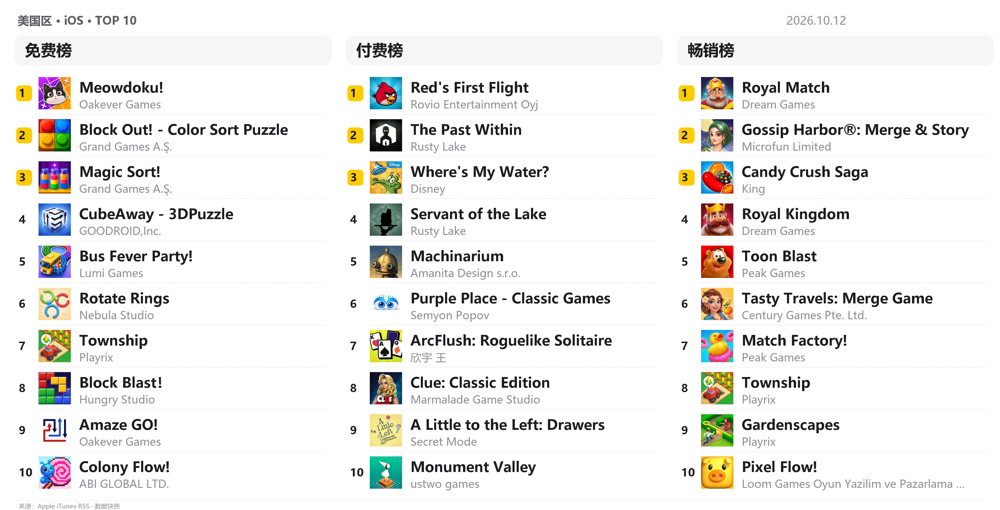
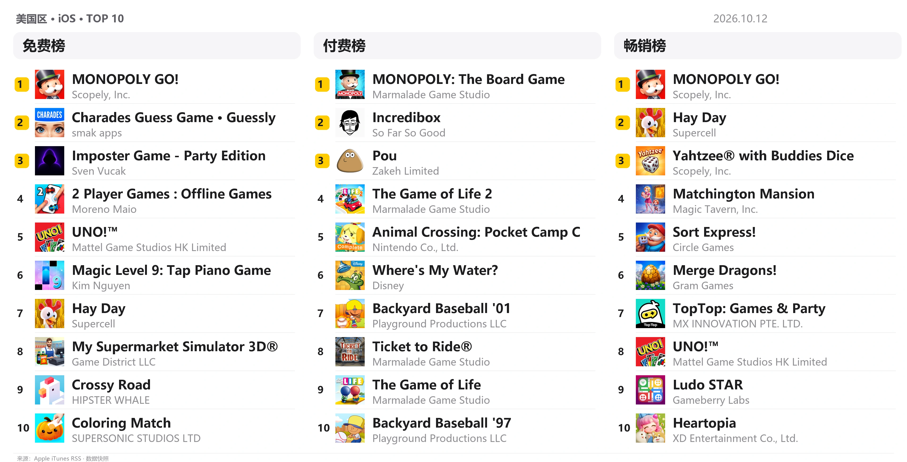
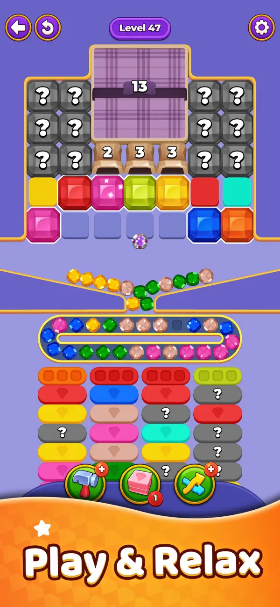
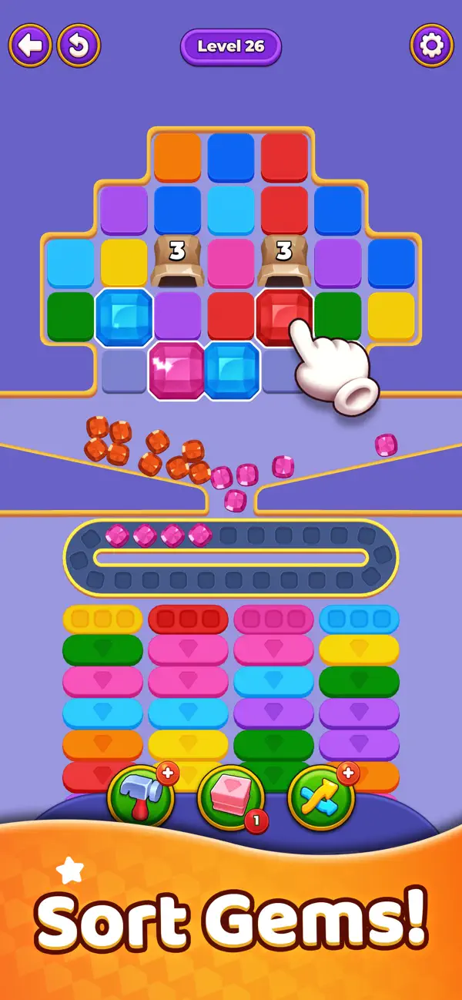
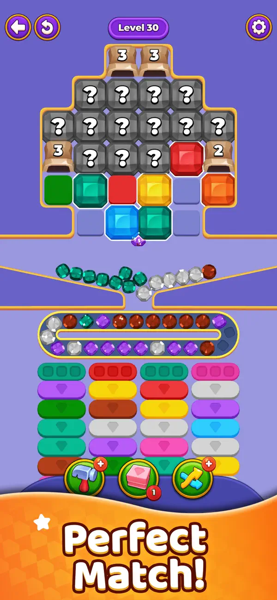
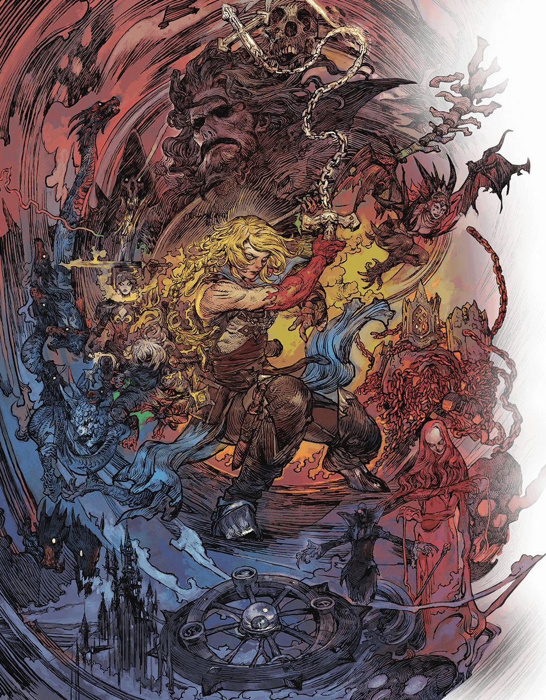
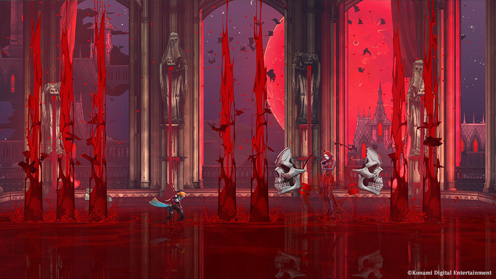
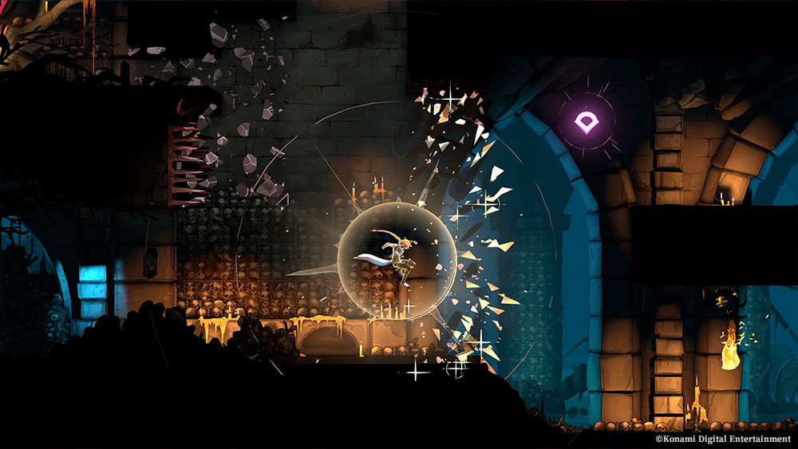

游戏榜单
→总榜、益智解谜、家庭
WEEKLY INTELLIGENCE REPORT
汇报人：盖麒
从解谜反馈、经典 IP 回归到影视与 AI，捕捉本期游戏行业脉冲。
THIS WEEK
总榜、益智解谜、家庭
《Drop Sort Jam》
《恶魔城：Belmont’s Curse》
《银翼杀手 2099》与 Gemini 4 Argon
RANKING SNAPSHOT · 01
免费 / 付费 / 畅销

美国区 · iOS · 数据采集：2026 年 10 月 12 日 21:11（北京时间） · Apple RSS ↗
03 / 13RANKING SNAPSHOT · 02
免费 / 付费 / 畅销

美国区 · iOS · 数据采集：2026 年 10 月 12 日 21:11（北京时间） · Apple RSS ↗
04 / 13RANKING SNAPSHOT · 03
免费 / 付费 / 畅销

美国区 · iOS · 数据采集：2026 年 10 月 12 日 21:11（北京时间） · Apple RSS ↗
05 / 13NEW GAME TEST
宝石分类 × 传送带
一场可见的容量博弈。
点击释放彩色宝石，让宝石沿传送带进入同色托盘；在传送带装满前清空场地。顺序点对，流动是爽感；颜色点散，轨道就成了压力。



EXPERIENCE JUDGMENT
点击释放宝石，经传送带流动，匹配同色托盘并逐步清空。
释放顺序与传送带容量；避免无效颜色同时占用有限空间。
宝石滚动、同色归位与ASMR音效，让成功与堵塞都可视化。
玩法判断
同一条传送带同时承载流动反馈与失败风险。值得观察的是：新增障碍能否让点击顺序持续产生新判断。
后续观察
GAME NEWS · KONAMI



KONAMI、Evil Empire 与 Motion Twin 联合开发。10 月 1 日开放试玩，进度可在同平台、同账号下继承至正式版；本周 10 月 15 日发售。
来源：KONAMI 官方 ↗08 / 13INDUSTRY OBSERVATION
圣鞭、哥特美学与贝尔蒙特家族延续辨识度；更流畅的动作、装备组合与 Arcana 系统，提供新的操作空间。
观察点：试玩能否让老玩家认出系列，也让新玩家迅速找到探索和战斗的乐趣。
系列美学
家族与圣鞭
动作探索
装备与 Arcana
试玩先行
存档衔接正式版
PRIME VIDEO · 影视资讯
Prime Video 在 10 月 10 日纽约漫展公开预告，官方页面今天更新。故事设定在《银翼杀手 2049》五十年后，由杨紫琼与 Hunter Schafer 主演。
关注点
从电影走向限定剧，经典世界观获得更长篇幅的角色与叙事空间。
GOOGLE · AI 资讯
能力升级，分阶段开放
Google 于 10 月 1 日公布新模型，先向受信任的网络防御者开放。重点面向软件工程、企业知识工作和网络安全防御，继续收集测试反馈。
强能力如何进入真实工作流程，开放节奏与安全边界同样关键。
SIGNALS, NOT NOISE
宝石流动带来爽感，传送带容量带来风险；点击顺序把轻操作变成可见的决策。
Drop Sort Jam经典 IP 通过新作品与新载体续写；熟悉的世界观，需要具体的新体验支撑。
Castlevania · Blade RunnerAI 进入更长、更复杂的真实任务，能力表现与安全评估共同决定开放节奏。
Gemini 4 ArgonEND OF REPORT
游戏行业周报 · 2026.10.12
Q&A